Touch Portal for Axis Cameras & CamStreamer
A Touch Portal plugin that controls Axis IP cameras and CamStreamer apps directly over the LAN — talking straight to the camera (VAPIX + CamStreamer / CamOverlay / CamSwitcher CGIs) with HTTP digest auth, and pushing live state back to your buttons.
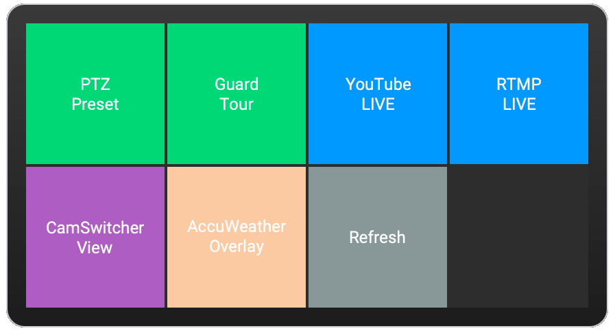
Actions
| Action | What it does |
|---|---|
| PTZ Preset | Go to a server preset position, or Home (per view-area channel). |
| AXIS Guarded Tour | Start / stop a Guarded Tour. Stops other tours on the same channel first. |
| CamStreamer Stream | Start / stop / toggle a CamStreamer stream. |
| CamOverlay Widget | Show / hide / toggle a CamOverlay service. |
| CamSwitcher Source | Switch to a CamSwitcher view / playlist. |
| Refresh / Discover | Re-read presets, tours, streams, overlays and views from the camera. |
Live state for button visuals
The plugin polls the camera and exposes Touch Portal States you can bind to button icons/text or use in event logic:
Axis: Connection—ok/error/unknownAxis: Stream <id> state—on/off/unknown(created per discovered stream)Axis: Overlay <id> state—on/off/unknownAxis: Guard tour <id> state—running/stoppedAxis: Active CamSwitcher viewAxis: Last action result
Settings
Configure once in Touch Portal → Settings → Plug-ins → Touch Portal for Axis…: Camera IP/hostname, Port, Username, Password, Use HTTPS (yes/no), Poll interval (seconds).
Install the plugin
- In Touch Portal, open Settings → Plug-ins → Import plug-in… and choose the
.tppfile. Touch Portal importstouch-portal-for-axis/plugin/plugin.js. - Approve the trust prompt — the plugin runs
node "%TP_PLUGIN_FOLDER%touch-portal-for-axis/plugin/plugin.js"on startup. Choose Trust Always or OK. - Once imported successfully, fill in your Camera IP / hostname, port, username, password and HTTPS option, then Save.
- Add Axis actions to any button from the Axis Cam + CamStreamer category in the button editor.
Starter page (optional)
Import the included Axis Control page template to get a ready-made button layout. The page requires the com.4xsdev.axis-tp plugin (this one) to be installed.
Screenshots
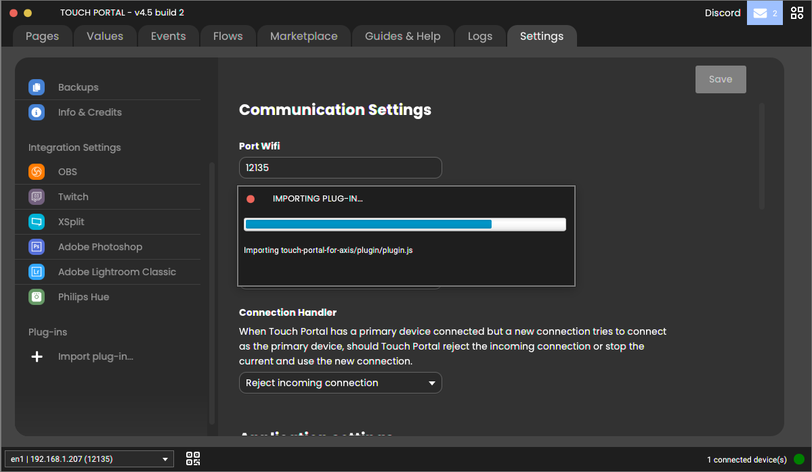
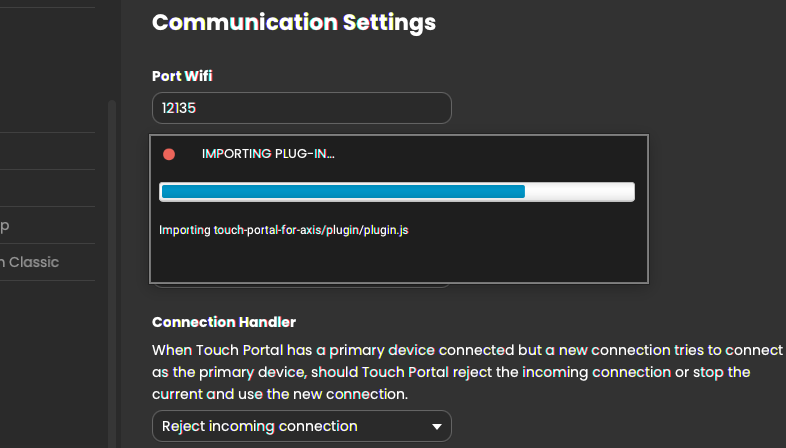
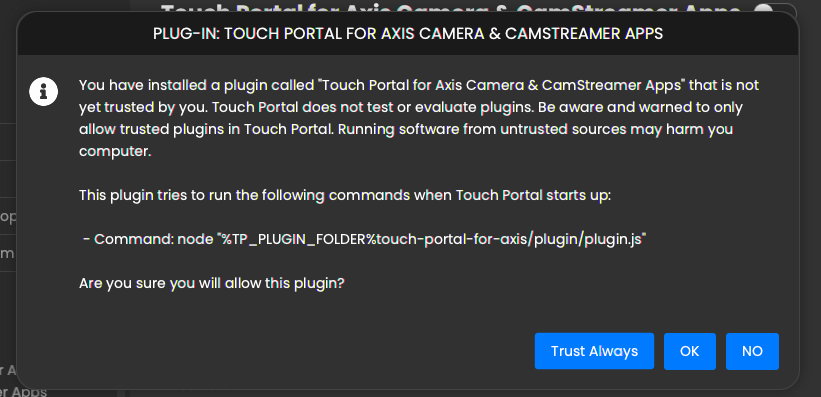
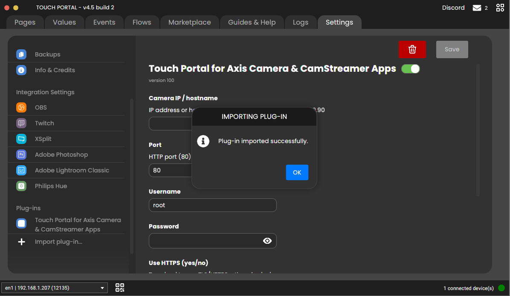
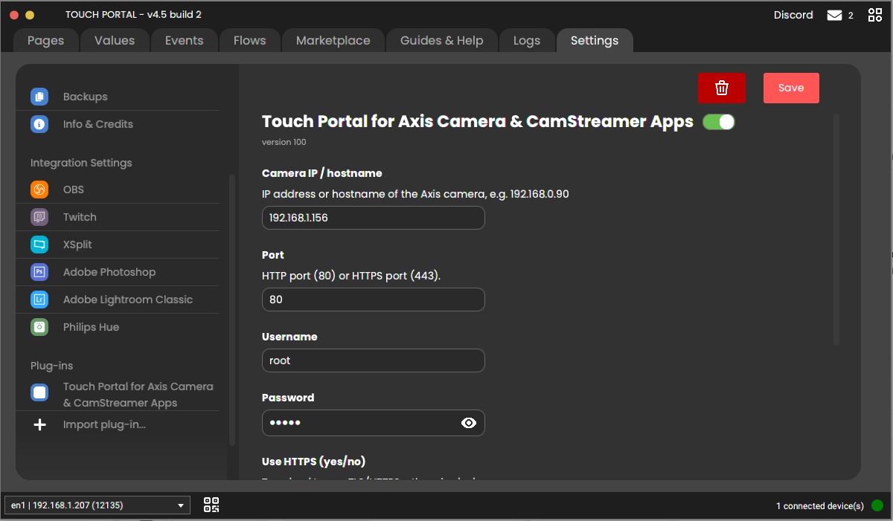
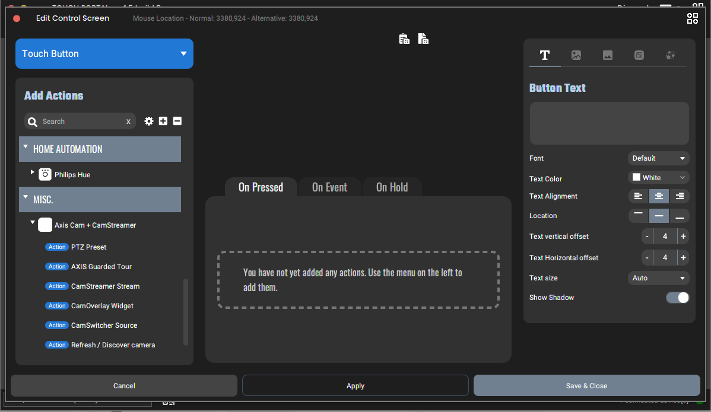
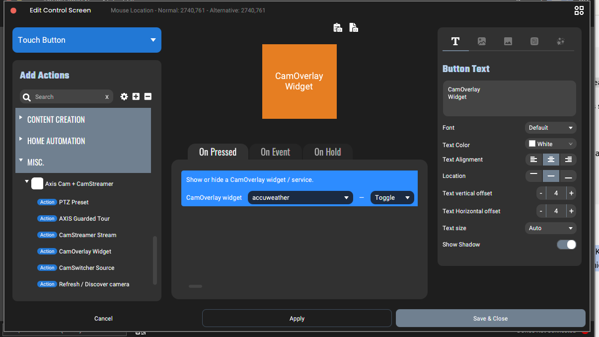
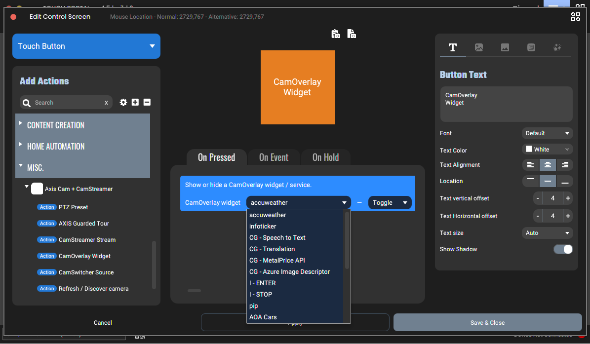
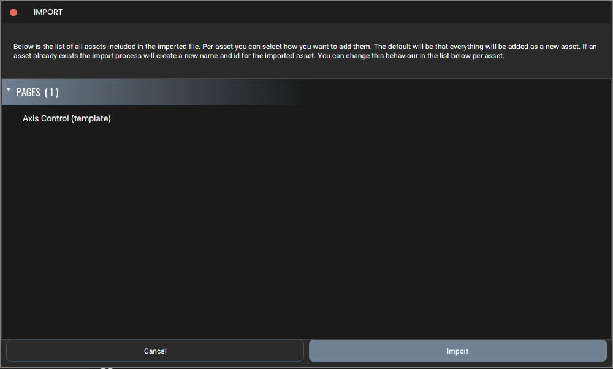
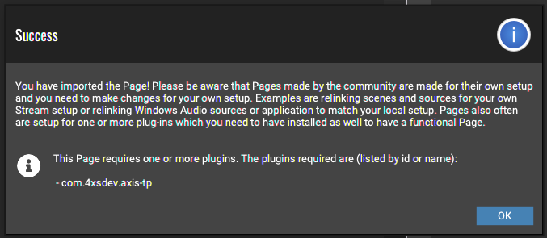
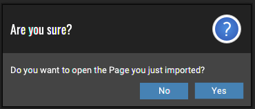
Build from source
Requires Node.js (the launch command runs node plugin/plugin.js; Touch Portal users need Node installed, or repackage as a standalone binary).
npm install
npm run build # bundles src/ -> plugin/plugin.js (single CommonJS file)
npm run pack # produces dist/touch-portal-for-axis-v1.0.0.tppImport the resulting .tpp via Touch Portal → Settings → Plug-ins → Import plug-in…
Standalone (no Node on the target machine)
To avoid requiring Node on end-user machines, compile plugin/plugin.js to a binary with @yao-pkg/pkg and point the plugin_start_cmd_* lines in plugin/entry.tp at the produced executable instead of node ….
How it maps to the Stream Deck plugin
The camera layer (src/camera.ts) is a near-verbatim port of the Stream Deck plugin's gateway.ts: same digest auth, same discovery endpoints, same sendCmd action names (ptz.preset, ptz.home, guardtour.start/stop, stream.set, overlay.toggle, view.switch). The difference is the front end: instead of Stream Deck's HTML Property Inspector, Touch Portal uses dynamically-populated dropdown choices (choiceUpdate) and runtime-created States (createState) delivered over the TCP plugin protocol (src/tp.ts).